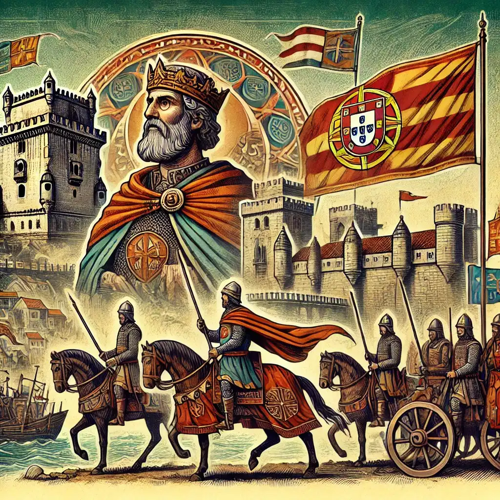
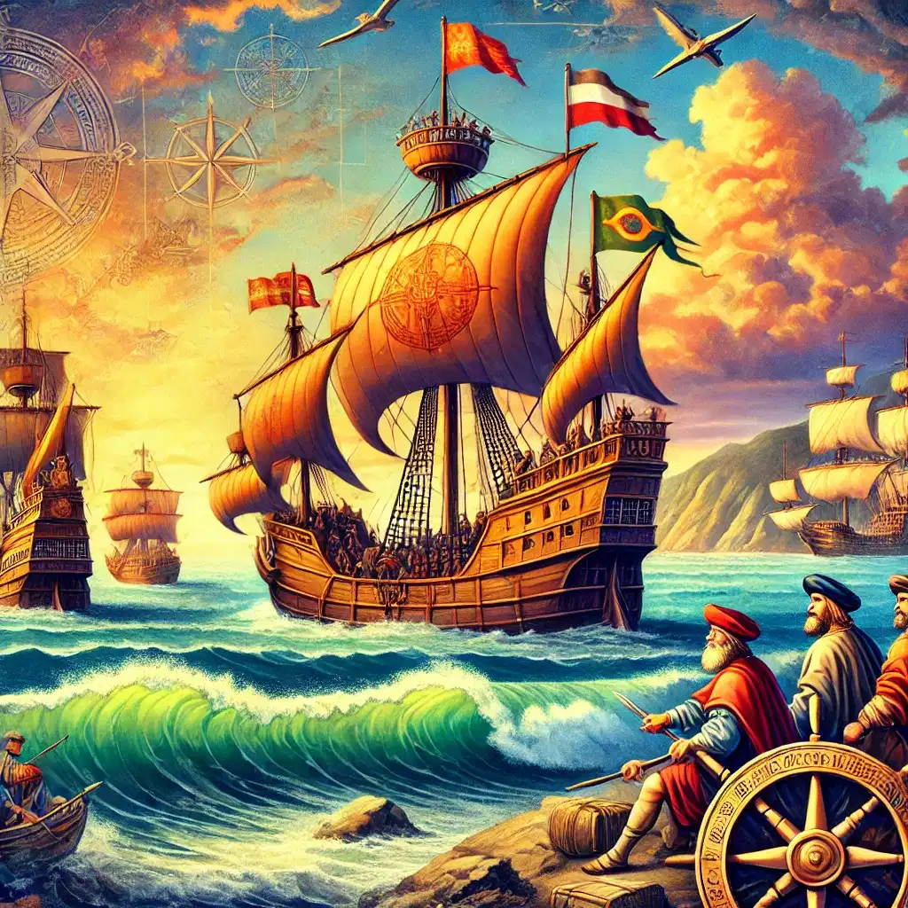
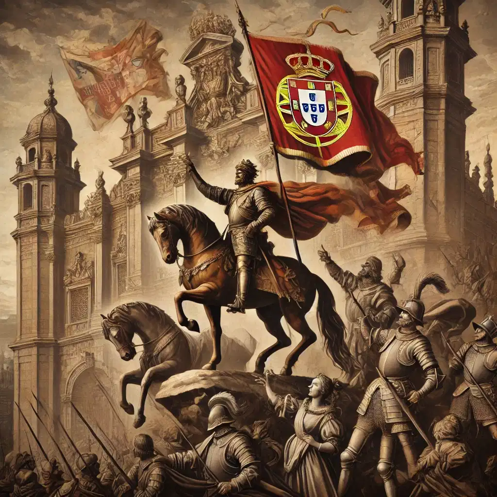
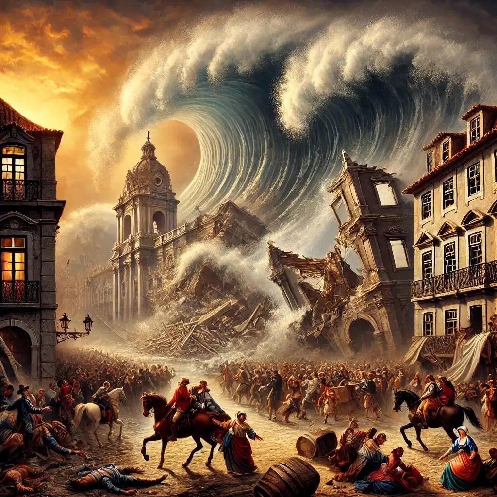
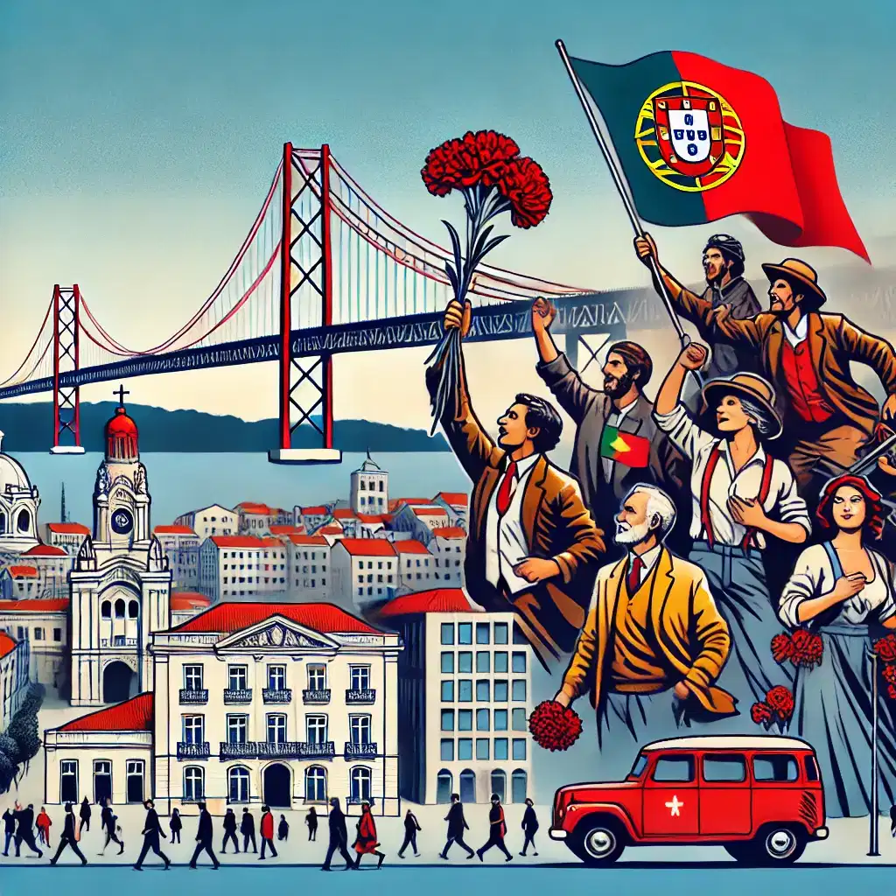

Fundación de Portugal (1139-1249)
La historia moderna de Portugal comienza en 1139, cuando Alfonso Henriques se proclamó Rey de Portugal tras la Batalla de Ourique. En 1143, con el Tratado de Zamora, Portugal fue reconocido como un reino independiente bajo el control de la Iglesia Católica.
En 1249, con la conquista del Algarve a los musulmanes, Portugal logró establecer sus fronteras definitivas, convirtiéndose en el primer país europeo en tener límites territoriales definidos que permanecen hasta hoy.
La Era de los Descubrimientos (1415-1580)
Portugal lideró la exploración marítima global durante los siglos XV y XVI. En 1415, la conquista de Ceuta marcó el inicio de la expansión portuguesa. Bajo el liderazgo del Infante Don Henrique, conocido como Enrique el Navegante, los navegantes portugueses comenzaron a explorar las costas africanas.
En 1498, Vasco da Gama llegó a la India, abriendo una nueva ruta comercial que consolidó a Portugal como una potencia marítima. En 1500, Pedro Álvares Cabral descubrió Brasil, que se convertiría en una de las colonias más importantes del imperio portugués.
Otros logros notables incluyen la llegada a Japón en 1543 y la colonización de regiones en África y Asia, como Goa, Malaca y Macao.
La Unión Ibérica y la Restauración (1580-1640)
En 1580, tras la muerte del rey Sebastián I sin herederos directos, Portugal fue anexado por España bajo la Unión Ibérica. Durante este período, Portugal perdió gran parte de su control comercial debido a los conflictos entre España e Inglaterra.
En 1640, Portugal recuperó su independencia gracias a la Revolución de la Restauración, liderada por el Duque de Braganza, quien se convirtió en el rey Juan IV. Este evento marcó el inicio de la dinastía Braganza y el renacimiento de Portugal como una nación independiente.
El Terremoto de Lisboa y la Pérdida Colonial (1755-1822)
El 1 de noviembre de 1755, un devastador terremoto seguido de un tsunami y varios incendios destruyó gran parte de Lisboa, dejando miles de muertos. Este evento marcó un punto de inflexión en la historia del país y llevó a importantes reformas urbanísticas y económicas bajo el liderazgo del Marqués de Pombal.
En el siglo XIX, Portugal enfrentó la pérdida de su colonia más rica, Brasil, que declaró su independencia en 1822. Este evento debilitó significativamente el poder económico y político de Portugal.
Portugal en el Siglo XX y XXI
En 1910, la monarquía portuguesa fue derrocada y se proclamó la Primera República. Sin embargo, el país vivió un período de inestabilidad política que culminó en la dictadura de António de Oliveira Salazar en 1933, bajo el régimen del Estado Novo.
El 25 de abril de 1974, la Revolución de los Claveles puso fin a la dictadura y marcó el inicio de una democracia. En 1986, Portugal se unió a la Unión Europea, lo que impulsó su desarrollo económico y modernización.
Hoy en día, Portugal es conocido por su rica cultura, su legado histórico y su papel como un destino turístico de renombre mundial.